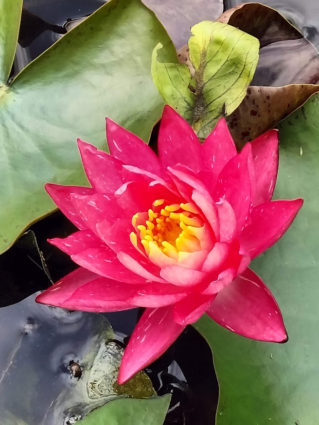
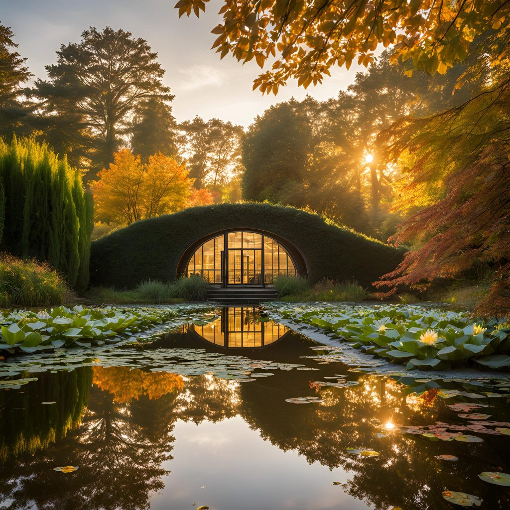
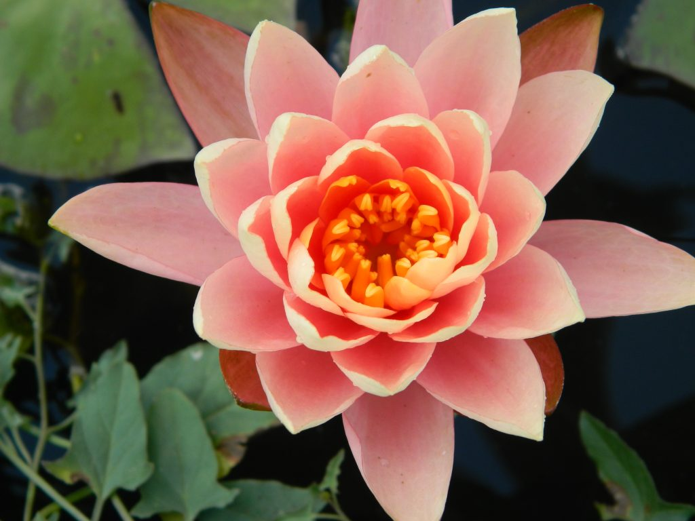
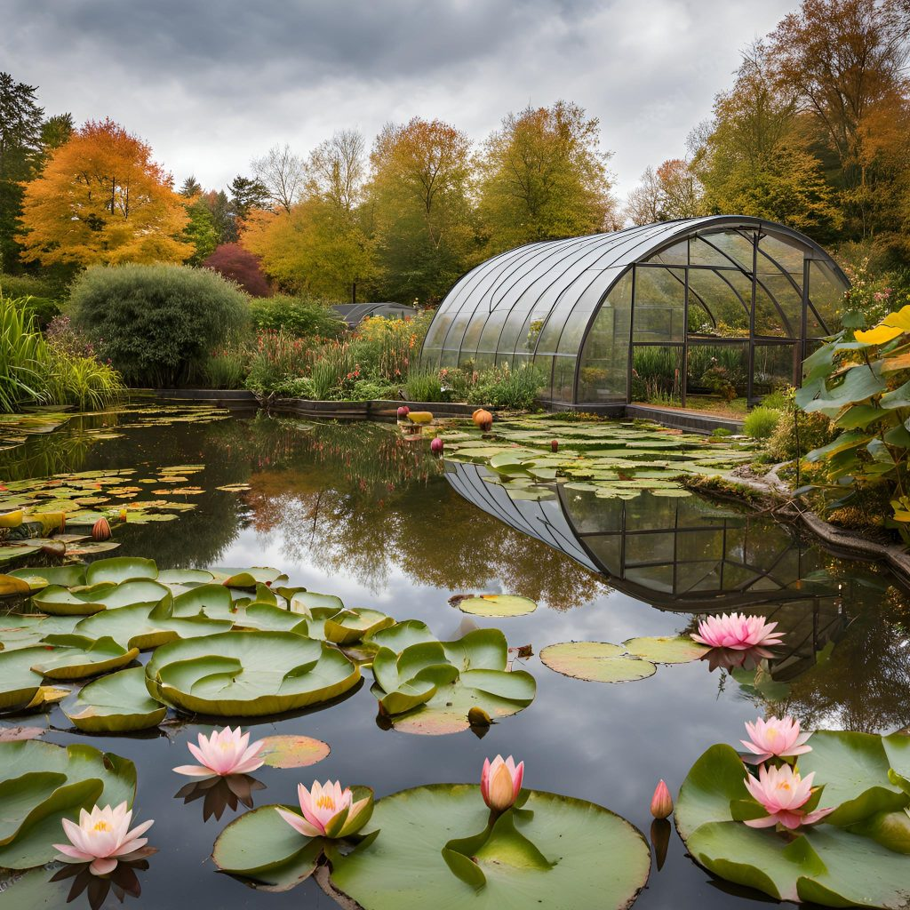

Située au sud du Rhône, dans les monts du Lyonnais près de Lyon, notre exploitation s’étend sur 1,5 hectare à environ 800 mètres d’altitude.
Nous produisons des plantes hélophytes dans des bassins en serre tunnel ainsi que dans des bassins extérieurs.
Notre équipe est composée de deux personnes à temps plein, avec le renfort de stagiaires en saison.
Nous privilégions des techniques respectueuses et efficaces, telles que le semis et le bouturage.
La récolte des graines et leur mise en culture sont réalisées directement par nos soins.
Pour les plantes endémiques ou spécifiques, nous collaborons avec un réseau de confrères français.
Grâce à cette organisation, nous produisons 80 % des variétés demandées. Pour les 20 % restants,
nous conservons des spécimens dans une bibliothèque de plantes "pieds-mères" afin d'anticiper les besoins de nos clients.
Lorsqu’une commande est annoncée à l’avance (2 à 3 mois), nous sommes en mesure de cultiver les variétés recherchées.
Notre clientèle se compose majoritairement de professionnels (70 %), notamment des paysagistes, des collectivités locales
(Riorges, Roanne, Saint-Galmier…), et des syndicats de rivière (S.I.C.A.L.A). Les particuliers représentent 30 % de nos ventes en direct.
Nous participons également à des foires et salons locaux.
Nous assurons la majorité des livraisons nous-mêmes, garantissant ainsi le transport qualitatif de nos végétaux.
Côté certification, nous fournissons un passeport phytosanitaire à jour et sommes en cours de certification "Végétal Local" pour certaines variétés.
À travers notre engagement pour une production locale, écologique et qualitative, nous cultivons notre passion pour les plantes aquatiques
tout en répondant aux attentes variées de nos clients.
Producteur de plantes hélophytes



